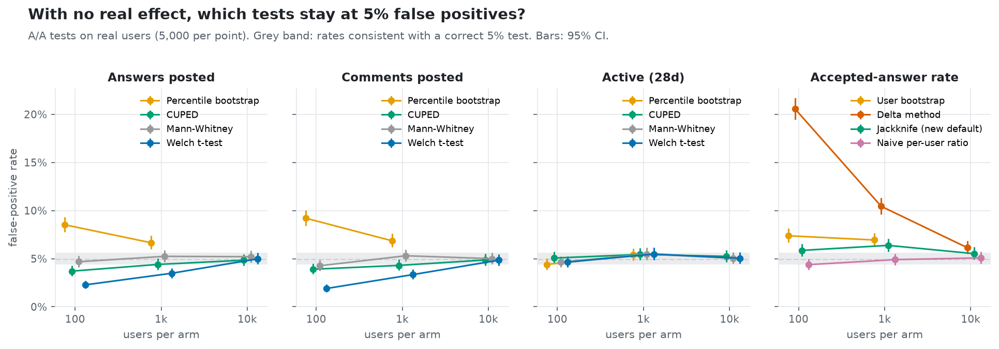
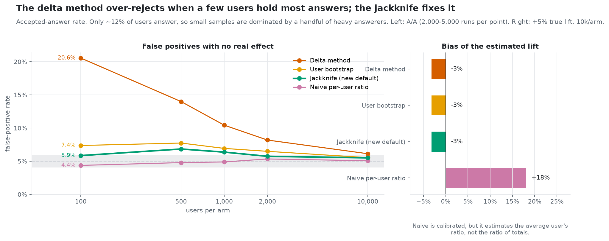
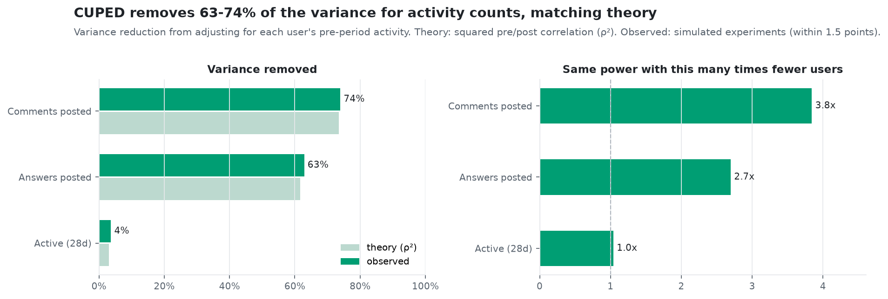
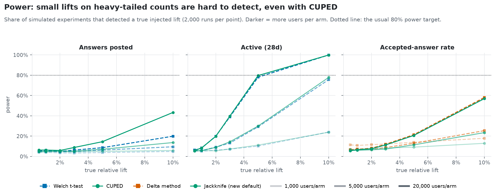
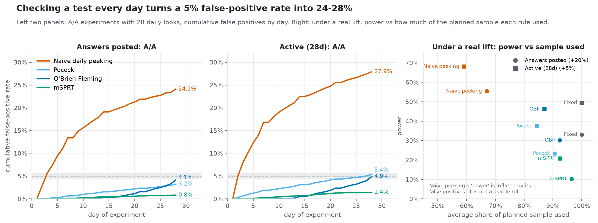
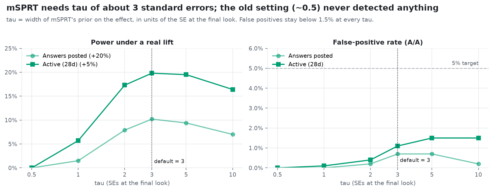
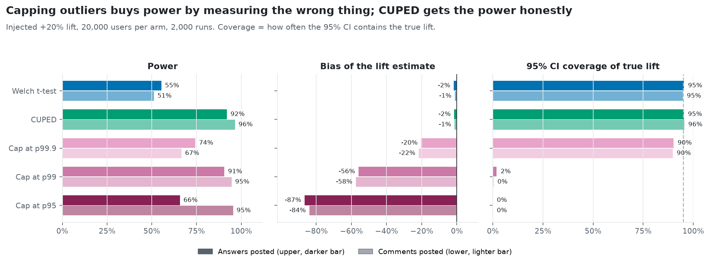
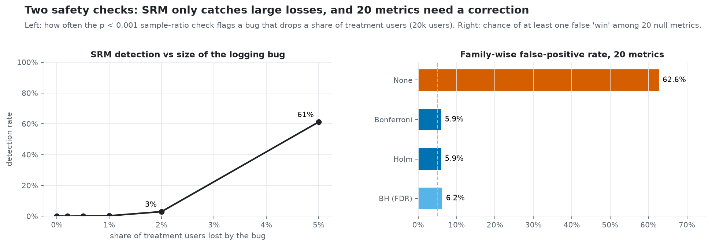
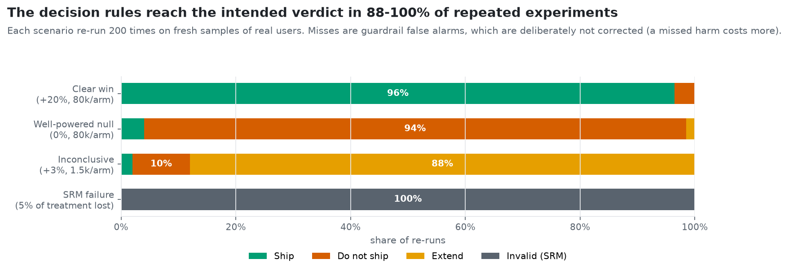

With no real effect, a test at α = 5% should flag 5% of experiments. These are the measured rates from 5,000 A/A experiments per cell on real users. Green means the 95% confidence interval of the measured rate includes 5%, so the test is behaving as promised.
| Metric | Method | 100 / arm | 1,000 / arm | 10,000 / arm |
|---|---|---|---|---|
| Answers posted | Welch t-test | 2.28% | 3.48% | 4.98% |
| Answers posted | CUPED | 3.70% | 4.40% | 4.84% |
| Answers posted | Percentile bootstrap | 8.52% | 6.66% | not run |
| Answers posted | Mann-Whitney | 4.68% | 5.24% | 5.20% |
| Comments posted | Welch t-test | 1.90% | 3.34% | 4.84% |
| Comments posted | Percentile bootstrap | 9.20% | 6.86% | not run |
| Active (28d) | Welch t-test | 4.64% | 5.48% | 5.04% |
| Accepted-answer rate | Delta method | 20.56% | 10.44% | 6.14% |
| Accepted-answer rate | Jackknife (new default) | 5.86% | 6.38% | 5.52% |
| Accepted-answer rate | Naive per-user ratio | 4.38% | 4.90% | 5.08% |
Population. Users who posted an answer or comment in the 56 days before 22 Aug 2022. Outcomes are measured over the next 28 days. Acceptances count only when their vote is dated inside the window, so no future information leaks into the data.
Why it is hard. 88% of users post no answers in the window, and the top 1% of users post 55% of all answers. Methods that assume well-behaved data meet their limits here, which is the point of the test.

Each point is 5,000 A/A experiments: two random groups of real users, no change applied. A correct test at alpha = 5% should flag about 5% of them; the grey band is the range a correct test would land in by chance.
On heavy-tailed counts (answers, comments) at small samples, Welch is conservative (1.9-3.5% at n <= 1,000: safe, but it loses power) and the percentile bootstrap is anti-conservative (8.5-9.2% at n = 100). Everything is calibrated by 10k users per arm. The delta method on the accepted-answer rate is the outlier: 20.6% at n = 100.
What the toolkit does about it. Ship decisions are gated on the false-positive rate at alpha; the percentile bootstrap is not recommended below 10k users per arm on heavy-tailed metrics. (D-053, D-054)

Accepted-answer rate = accepted answers / answers, summed per arm. Left: false-positive rate with no real effect. Right: bias of the estimated lift when a true +5% lift is injected.
The delta method's variance formula underestimates how much one heavy answerer moves the ratio, so it flags 20.6% of null experiments at 100 users per arm and 10.4% at 1,000. The leave-one-user-out jackknife with a t reference brings this to 5.9% and 6.4% and is now the default. The naive per-user ratio looks calibrated but answers a different question and is 18% biased.
What the toolkit does about it. The jackknife ratio test is now the default for ratio metrics. (D-050)

CUPED subtracts the part of each user's outcome predicted by their own pre-experiment activity. Theory says it removes rho-squared of the variance (rho = pre/post correlation).
Observed reduction matches theory within 1.5 points: 63% for answers and 74% for comments, so the same test needs 2.7x and 3.8x fewer users. For 'active in 28 days' the pre-period predicts little (4%), so CUPED adds almost nothing there.
What the toolkit does about it. CUPED is the default for metrics with pre-period data. (D-025, D-054)

Share of 2,000 simulated experiments that detected a known injected lift, by lift size and users per arm. Dotted line: the conventional 80% power target.
Binary activity is easy: a 5% lift is found about 80% of the time at 20k users per arm. Answers are hard: even with CUPED a +10% lift at 20k per arm is found only 43% of the time (Welch: 20%), so about a 15% lift is needed at that size. On the ratio metric at 1,000/arm the delta method's apparent extra 'power' at tiny lifts (11% at +0.5%) is just its false-positive excess.
What the toolkit does about it. Pick the primary metric with the power calculator before launch; answers posted is a weak primary metric for small or medium experiments. (D-049)

28 daily looks at an experiment with 10k users per arm. Left panels: share of A/A experiments declared significant by each day. Right: with a real lift, power against the average share of the planned sample used before stopping.
Stopping at the first p < 0.05 finds a false winner in 24-28% of null experiments. O'Brien-Fleming and Pocock keep false positives at or below ~5%, and O'Brien-Fleming keeps about 93% of fixed-horizon power (30% vs 33%; 46% vs 49%) while stopping 8-13% earlier on average. mSPRT is the most conservative (0.8-1.4%) and gives up about half the power.
What the toolkit does about it. If you will look early, use O'Brien-Fleming; use mSPRT only when looks can't be planned. (D-051)

mSPRT mixes over possible effect sizes with a normal prior of width tau. Here tau is expressed in standard errors of the difference at the planned final look.
The original setting (tau = 5% of the metric mean) was about 0.5 SE for answers, where mSPRT can never reject. Power peaks at 3-5 SE and false positives stay under 1.5% at every tau, so the default is now 3 SE.
What the toolkit does about it. mSPRT's prior width is set in standard errors at the planned final look, default 3. (D-051)

A +20% lift injected at 20k users per arm. Capping (winsorising) replaces values above a percentile with that percentile. Bias: how far the estimated lift is from the true one. Coverage: how often the 95% CI contains the true lift (should be 95%).
Capping at p99 reaches the same power as CUPED (91% vs 92% on answers) but underestimates the lift by 56% and its CI almost never contains the truth (2%). The lift sits mostly in heavy users, which is exactly what capping removes. CUPED gets the power with 1-2% bias, so capping is not used by default.
What the toolkit does about it. No capping by default; CUPED gives the power without the bias. (D-052)

Left: a simulated logging bug drops a share of treatment users; how often does the chi-square sample-ratio check (p < 0.001) catch it? Right: 20 metrics with no real effect; how often is at least one flagged?
SRM catches a 5% loss 61% of the time and a 2% loss only 3%, so a passing check does not prove logging is clean. Without correction, 20 null metrics produce a false 'win' 63% of the time; Holm or Bonferroni bring it to 5.9%, and Benjamini-Hochberg (which controls a different error rate) to 6.2%.
What the toolkit does about it. SRM gates every readout. Holm controls several decision metrics; guardrails stay uncorrected on purpose. (D-027, D-028, D-033)

Four scenarios, each re-run 200 times on fresh samples of real users through the full decision engine (SRM gate, guardrails, primary metric, MDE rule).
The engine reaches the intended verdict 96% (clear win), 94% (well-powered null), 88% (inconclusive) and 100% (SRM failure) of the time. The misses are mostly guardrail false alarms, a deliberate choice: guardrails are not multiplicity-corrected because a missed harm costs more.
What the toolkit does about it. Each example readout states how often its verdict occurred across the re-runs, so no single lucky draw is presented as typical. (D-049)
| Problem found | Fix | Result |
|---|---|---|
| Delta method: 20.6% false positives at n = 100 | Jackknife + t reference, now the default | 5.9% |
| mSPRT: 0% power | Prior width in standard-error units, default 3 | Power 10–21%, false positives ≤ 1.5% |
| Capping: −56% bias | Off by default; CUPED recommended | 92% power, −1.5% bias |
| Outcome window ran past the end of the data | Start-date guard in the extract | Complete 28-day windows |
| Example scenarios sized on synthetic data | Re-sized from real-data power, 200 re-runs each | 88–100% intended verdicts |
| Situation | Use |
|---|---|
| Count or mean metric with pre-period data | CUPED |
| No pre-period data | Welch t-test; avoid the percentile bootstrap below 10k users per arm |
| Ratio metric (e.g. accepted / answered) | Jackknife ratio test |
| You will check results before the end | O'Brien-Fleming boundaries |
| Unplanned or continuous monitoring | mSPRT, prior width ≈ 3 SE |
| Several metrics decide the test | Holm; keep guardrails uncorrected |
| Every readout | SRM check first, but a pass is not proof of clean logging |
Every decision behind these results, with its reasoning, is logged in DECISION.md in the repository. To reproduce: make experiments, make readouts, make figures.